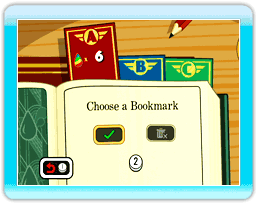
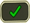
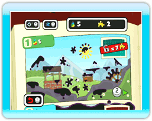
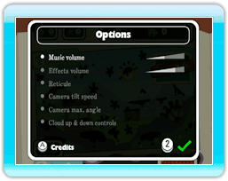

● Save-Select Screen
Upon starting Fluidity, you’ll be greeted with the save-select screen after a brief animation. If this is your first time playing Fluidity, select an empty bookmark (one that says New) to use for your profile by using  and confirm by pressing
and confirm by pressing  . You’ll then be shown a quick tutorial to help you get accustomed to the game.
. You’ll then be shown a quick tutorial to help you get accustomed to the game.
If you’re continuing a previous game of Fluidity, simply select the bookmark that contains your saved game to pick up from where you left off.
Once you’ve chosen a bookmark, select the check-mark icon () to confirm, or use to select the trash-can icon ( ) to delete the saved game. Be careful—once you’ve deleted a saved game, there’s no getting it back.
) to delete the saved game. Be careful—once you’ve deleted a saved game, there’s no getting it back.

● Chapter-Select Screen
The Aquaticus is divided up into four chapters, of which only the first chapter is initially selectable. Further chapters can be opened up as you collect Rainbow Drops.
Select the chapter you wish to play with and press to confirm your selection.
Each chapter also contains a playroom, which can be unlocked by collecting puzzle pieces () hidden around the Aquaticus’s pages. Once the room has been unlocked, you can access it by simply pressing  while its corresponding chapter is displayed on the screen. (→ P. 13)
while its corresponding chapter is displayed on the screen. (→ P. 13)

● Options Screen
By pressing on the chapter-select screen, you can access the Options menu to change settings. Press up and down on to move between the various options. To accept the changes and return to the chapter-select screen, press .
Press to view the credits for this title.
 |
 |
 |
 |
About Saving
This game will automatically save your progress when you collect a Rainbow Drop or exit a chapter via the pause menu.
If you wish to delete a saved game, simply select it from the save-select screen and then highlight the icon. Be careful, though: a saved game cannot be recovered once deleted.
|
Note:
Performing the actions below may result in your records not being saved or data being lost.
This data cannot be recovered, so please be careful!
-
Turning off the power or resetting the Wii console or Wii Remote while data is being saved.
-
Disconnecting the AC adapter from your Wii console while the game is being played.
|
|
 |
 |
 |
 |